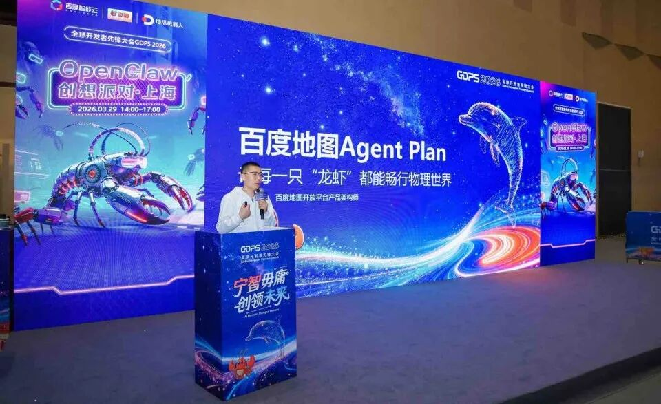
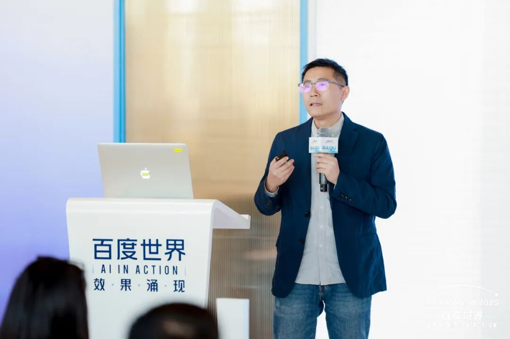
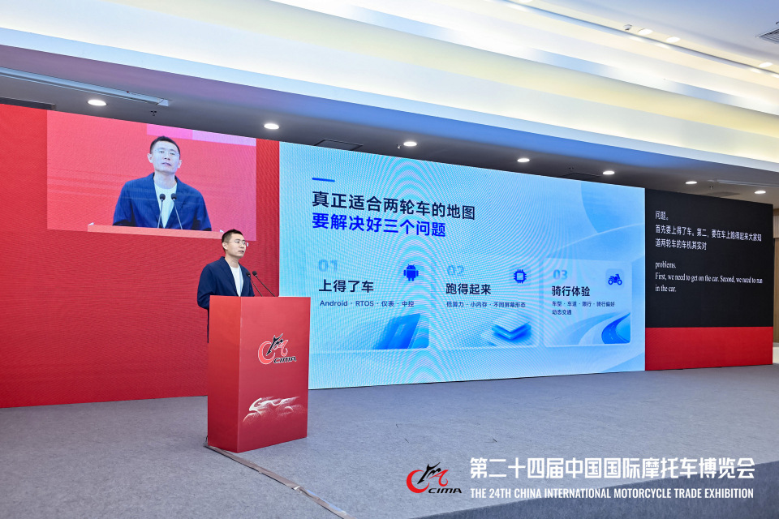
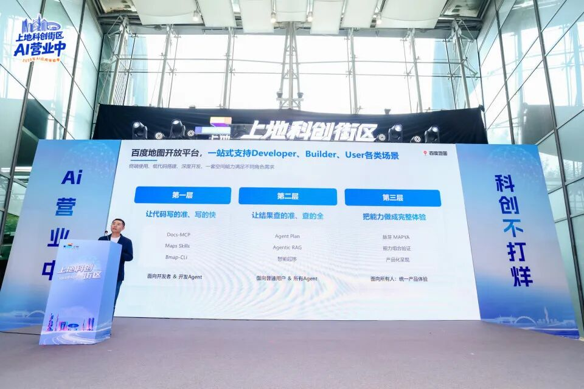

AI × Maps
Making map capabilities agent-ready
Leading an AI-native upgrade of the map platform—from Map Agent Plan and Skills to MCP and developer tools—so agents can search places, plan routes, and build with maps through natural language.
Spatial intelligence · AI agents · Mobility
Building spatial intelligence for AI agents and real-world mobility
Product lead at Baidu Maps Open Platform, turning map data and services into capabilities that agents, developers, and mobility partners can use in the real world.

AI × Maps
Leading an AI-native upgrade of the map platform—from Map Agent Plan and Skills to MCP and developer tools—so agents can search places, plan routes, and build with maps through natural language.
Mobility × Spatial AI
Bringing map and AI experiences to two-wheelers and smart glasses: conversational riding assistance, lane-level navigation and projection, plus lightweight, glanceable wearable guidance.
Platform × Global
Building a full-stack overseas API service and bringing it to market, while evolving search, geocoding, navigation, and routing products for enterprise partners.
B2B commercialization
Map Agent Plan · GDPS 2026

Baidu World 2025

Two-wheel mobility

AI for map developers
Product Architect · AI-native platform
Leading AI platform capabilities, overseas API services, and B2B commercialization.
Product Lead
Built merchant tools for store presence and map-based customer acquisition, growing adoption among local businesses.
POI Data Product Lead
Led product, data strategy, and production-platform teams to improve POI quality and processing efficiency.
Product Expert
Led POI quality and data-ecosystem work for mobility, including real-world intelligence sources and POI-centered knowledge graphs.
Product Manager · Senior Product Manager
Built in-car navigation map products at NavInfo, then led POI data experience and product capabilities at Baidu Maps.
Education · B.Eng. in Computer Science, Beijing Jiaotong University · M.Eng. in Computer Science, Tsinghua University